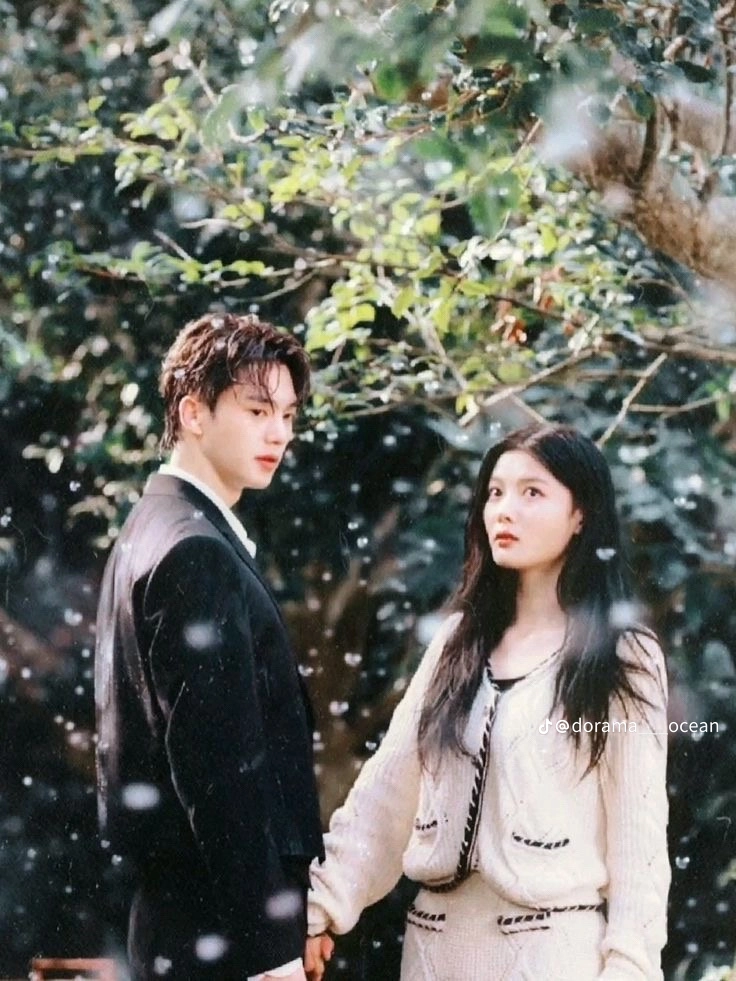

The kdrama that really catches my heart and make me love them more
The main character are Song Kang as Jeong Gu-Won and Kim You-Jung as Do Do-Hee Gu-Won was a demon and the source of his power is through the tattoo on his wrist. The tattoo transferred to Do-Hee and that is the reason why he loses his powers.He enters into a contract marriage with her. To prevent his own extinction,he must protect Do-Hee who has taken all of his powers.